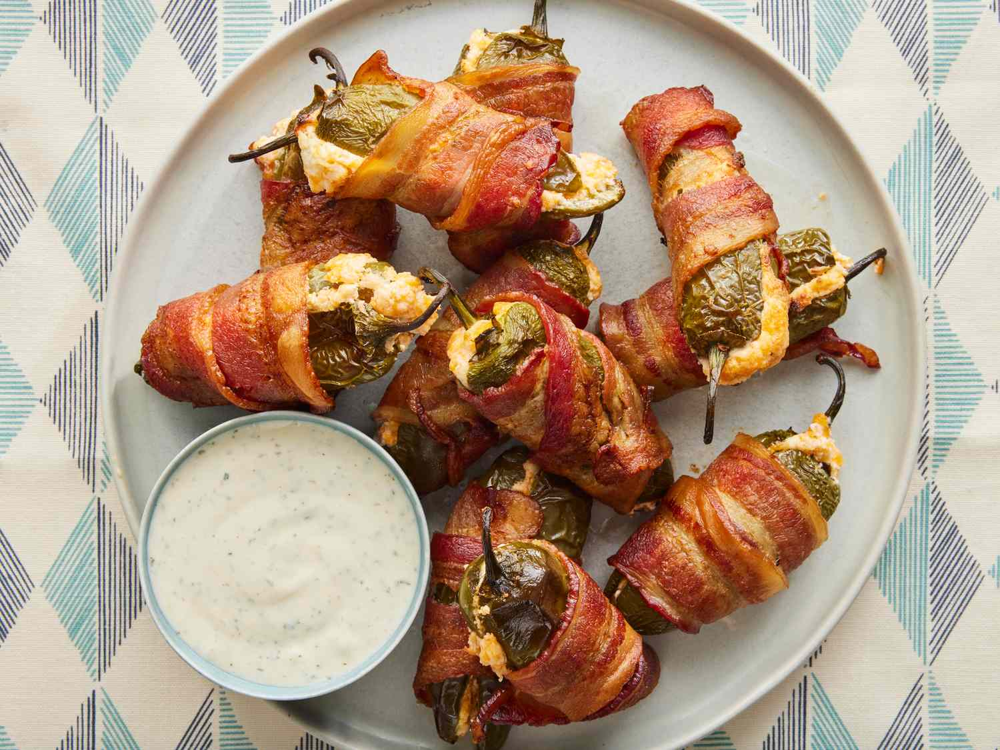

Home
Jalapeno Poppers

Description
This is a recipe for jalapeno poppers that was passed down by my great-great-great grandmother twice removed. It is now being released to the public.
Ingredients
- 1/2 cup cream cheese
- 1/2 cup shredded cheddar cheese
- 12 jalapeno peppers, halved lengthwise, seeds and membranes removed
- 12 sliced bacon
Steps
- Gather ingredients. Preheat the oven to 400 degrees F (200 degrees C). Line a baking sheet with aluminum foil.
- Mix cream cheese and Cheddar cheese together in a bowl until evenly blended. Fill each jalapeño half with cheese mixture.
- Put halves back together and wrap each stuffed pepper with a slice of bacon. Arrange bacon-wrapped jalapeño peppers on the prepared baking sheet
- Bake in the preheated oven until bacon is crispy, 25 to 35 minutes.
- Serve poppers hot with your favorite dipping sauce. Enjoy!